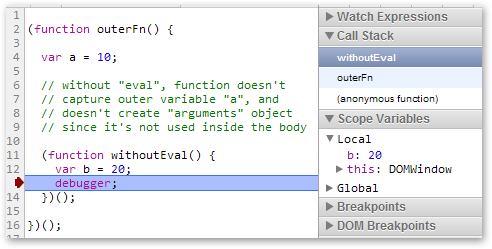

by Kai Sellgren
asd
Scope is an enclosing context where values and expressions are associated. The type of scope determines what kind of entities it can contain and how it affects them—or semantics.
Typically, scope is used to define the extent of information hiding. That is, the visibility or accessibility of variables from different parts of the program.
Scopes can:
Variables are associated with scopes. Different scoping rules affect how local variables are bound. This has different consequences depending on whether the language has static (lexical) or dynamic scoping.
Scopes are also often referred to as environments.
With lexical scope, a name always refers to its (more or less) local lexical environment. Because this matching only requires analysis of the static program text, this type of scoping is also called static scoping.
Static scoping allows the programmer to reason about object references such as parameters, variables, constants, types, functions, etc. as simple name substitutions. This makes it much easier to make modular code and reason about it, since the local naming structure can be understood in isolation.
In ECMAScript, every function defines a new scope. This is called function scoping.
We will possibly have block scoping in ECMAScript 6 "Harmony", but that is not sure yet.
function foo() {
var a = 'Hello';
function bar() {
var b = ' world!';
console.log(a + b); // Hello world!
}
console.log(a + b); // Hello undefined
}
foo();
There are three scopes in the above code and the function bar uses Lexical scoping, because in ECMAScript we have function-based scoping rules.
Scope resolution (identifier resolution) is used for finding symbols such as variables within a scope chain.
var a = 1; Program scope:
function foo() { a: 1
var b = 2;
function bar() { Function scope "foo":
var c = 3; b: 2
c - b - a; // 0
} Function scope "bar":
}; c: 3
When executing function bar, the symbol a is retrieved through scope resolution like so:
During the process of parsing and compiling the program, the engine will create LexicalEnvironment objects.
LexicalEnvironment:
EnvironmentRecord environment:
...
LexicalEnvironment outer:
...
Each LexicalEnvironment objects contain a reference to the outer environment, which can be a null reference.
They have a single EnvironmentRecord object which holds each symbol inside.
var x = 1;
function foo() {
var y = 2;
}
LexicalEnvironment programScope:
EnvironmentRecord environment:
// "Built-in features" in global scope
Date: function() {}
Array: function() {}
...
x: 1
LexicalEnvironment outer: null
LexicalEnvironment fooScope:
EnvironmentRecord environment:
y: 2
LexicalEnvironment outer: programScope
LexicalEnvironment objects are used in scope/identifier resolution. All this forms a so-called scope chain.
There are two types of EnvironmentRecord. First is the declarative environment record, which holds variables, functions, formal parameters and such.
These declarative records can be very efficient and are often stored low level in the registers of virtual machines. They are created with several optimizations such as completely omitting unnecessary symbols.
One of the several drawbacks to using eval is its inefficiency. Declarative records can no longer be efficient, because the underlying engine has no idea what is going to happen when eval is used.
The term Closure seen in the above screenshot is the parent environment. The parent environment is "closed up" with the current context, hence it's called a Closure.
The other type of EnvironmentRecord in contrast to the declarative environment record is called the object environment record.
It is used for the global scope (and also for with statements).
var a = 10; console.log(a); // 10 // "this" in the global context is the global object itself. console.log(this.a); // 10 // "window" is the reference to the global object in the browser environment. console.log(window.a); // 10
Removing the global object from the bottom of the scope chain is planned for the ES.next. That is, the global environment record will be also declarative.
With a system of planned modules, global bindings such as parseInt, Math, etc. will just be imported to the global context. We won’t be able to refer global variables as properties of the global object anymore, since there will be no any global object.
"A closure is a combination of a code block and data of a context in which this code block is created."
var x = 10;
function foo() {
console.log(x);
}
(function (f) {
var x = 20;
// The variable "x" for "f" is saved statically from the (lexical) context,
// in which it was created.
f(); // 10, but not 20
})(foo);
function makeGreeter(name) {
return function() {
return "Hello " + name + "!";
}
}
var jackGreeter = makeGreeter('Jack');
var bauerGreeter = makeGreeter('Bauer');
jackGreeter(); // Hello Jack!
bauerGreeter(); // Hello Bauer!